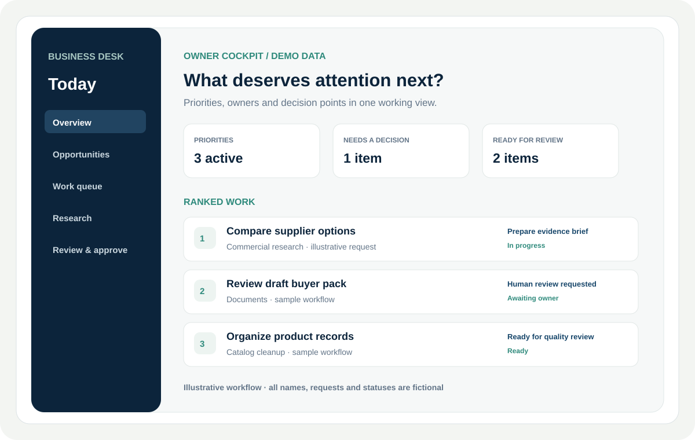

The business problem
Owners juggle opportunities, decisions, review steps and operating work across disconnected views.
A management cockpit that helps an owner see what matters next and coordinate follow-through.

Owners juggle opportunities, decisions, review steps and operating work across disconnected views.
A decision-support workflow that groups ranked priorities, human decision points and work ready for review.
Organize work around business priorities, clear ownership and evidence at decision and review points.
The visual uses entirely fictional company activity; it shows the buyer-facing idea rather than private runtime details.
Designed to give owner-managers a clearer view of priorities, decisions and follow-through. The example shown uses fictional data.